Svět Umělé Inteligence
Průvodce pro každého
Co to je, jak to funguje a proč se bát nemusíte.
🎯 Cíl: Odstranit obavy z technologie a ukázat její praktické využití.
Co to je, jak to funguje a proč se bát nemusíte.
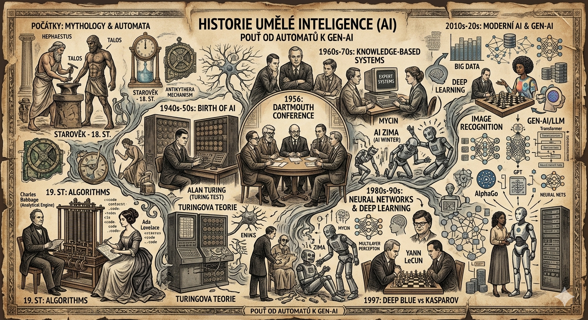
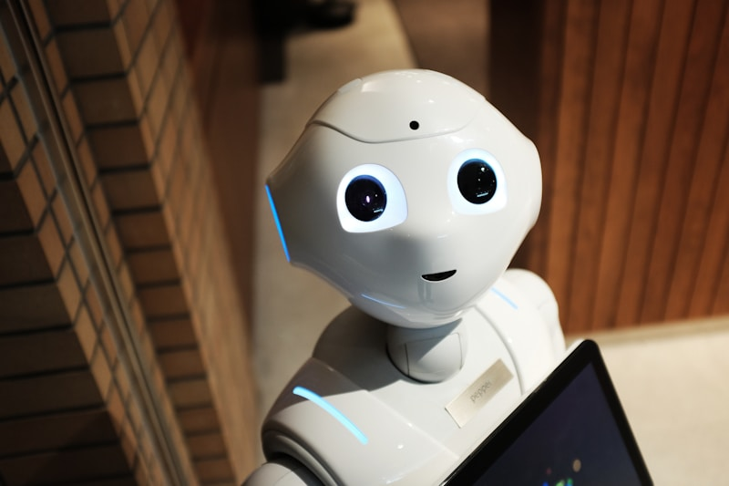
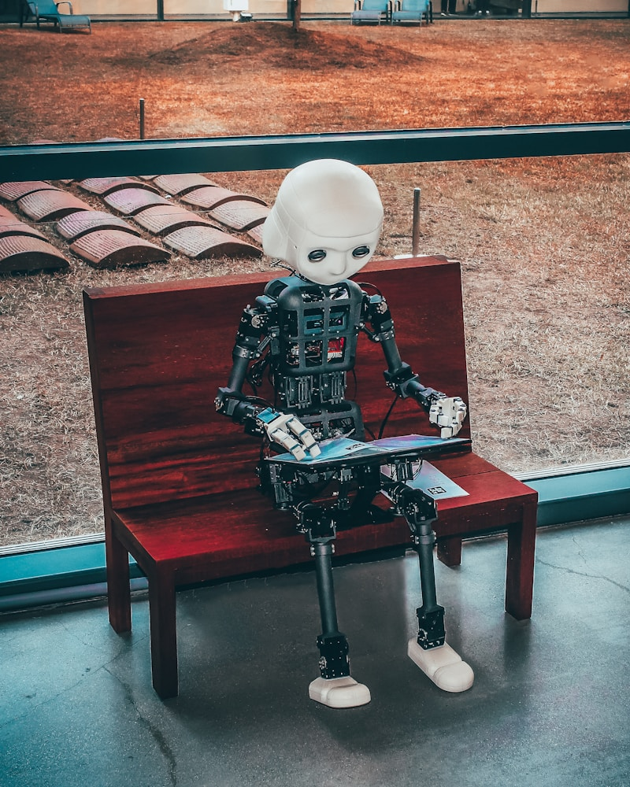
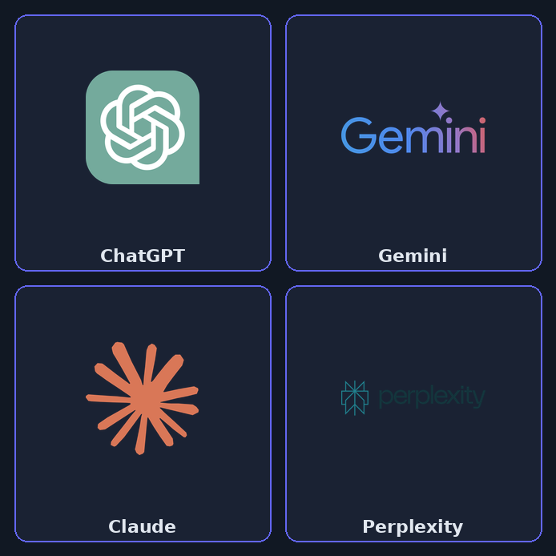
Rozdíl mezi Chatbotem a Agentem:
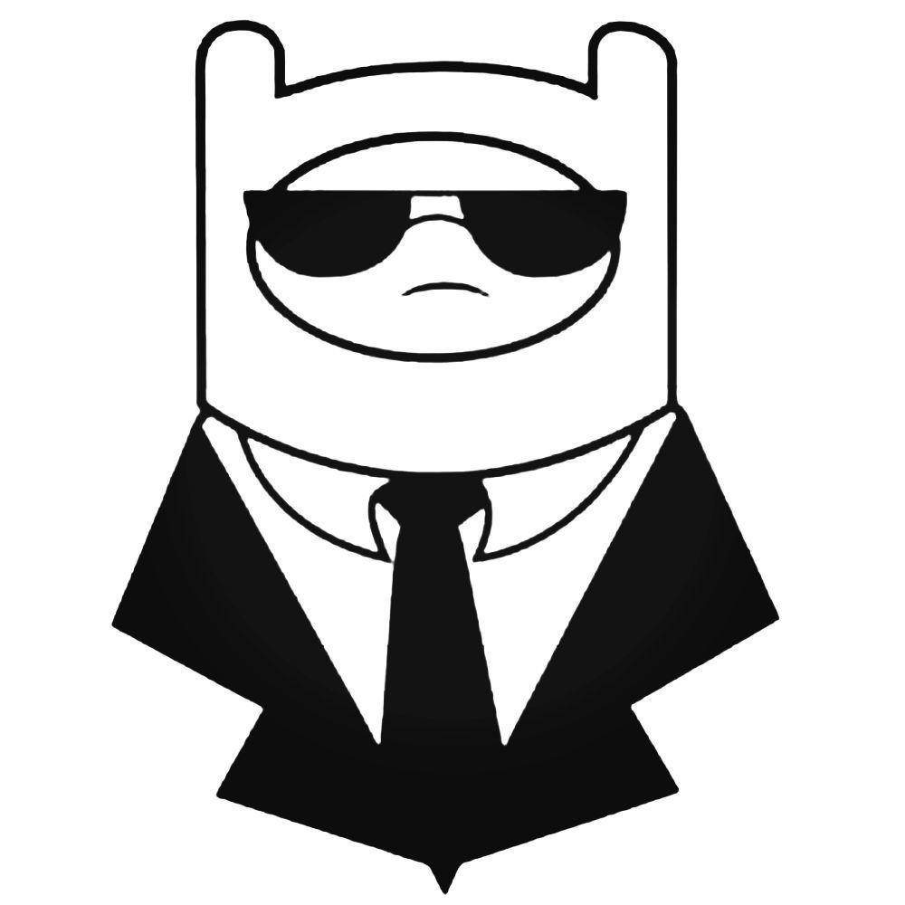
Kvalita výstupu závisí na kvalitě dotazu.
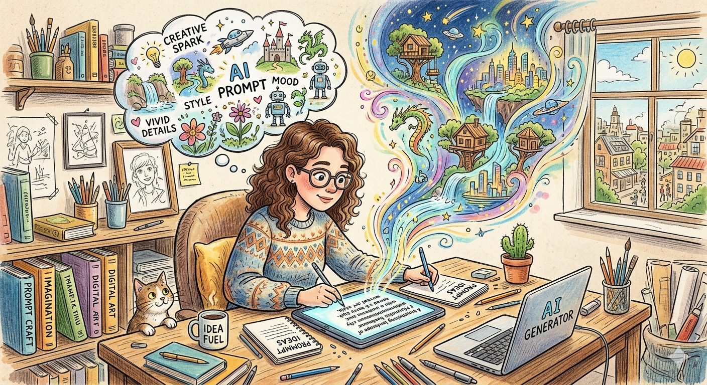
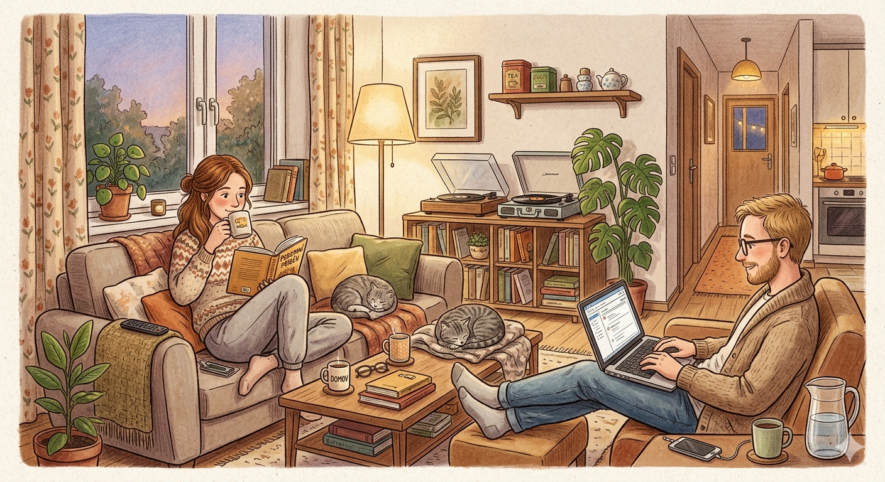
Vytvořte si vlastního specializovaného AI asistenta — zdarma, bez programování.
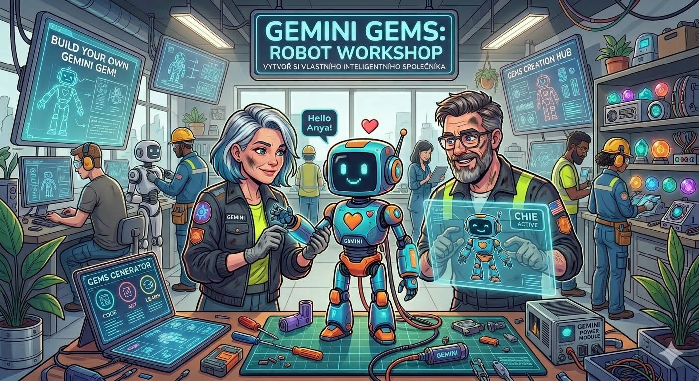
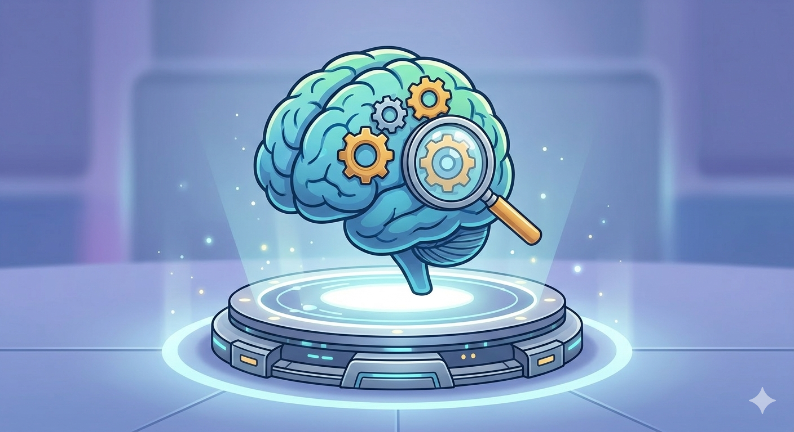
Máte nějaký konkrétní úkol, který byste chtěli s AI vyřešit?
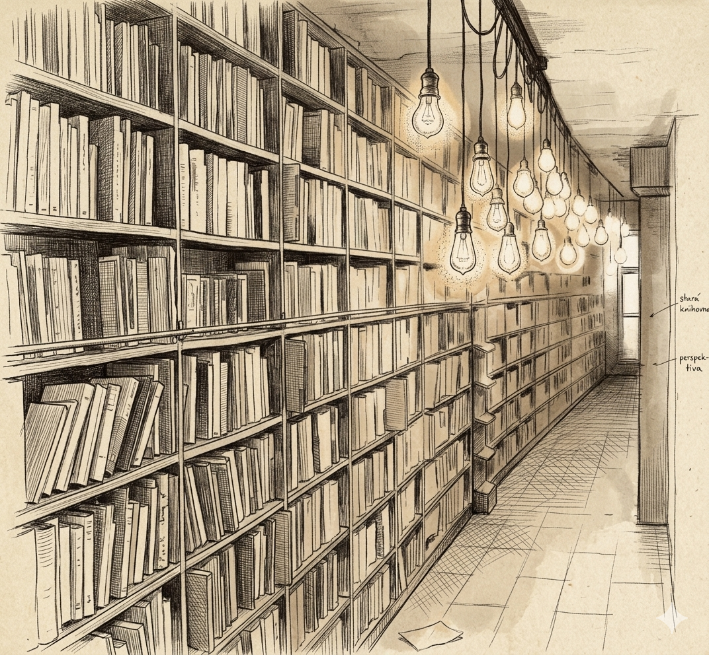
Nebojte se ji vyzkoušet.
Kdo ji umí používat, nahradí toho, kdo to neumí.
Prostor pro dotazy
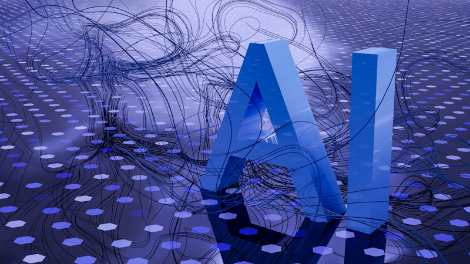